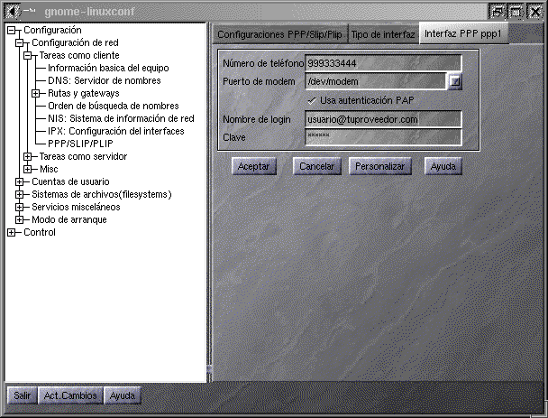

También puedes encotrar más información en LinuxZone sobre la configuración manual del modem.
Una vez que tengas compilado el núcleo
con las opciones oportunas o que más se aproximan a tus gustos,
existen herramientas que te harán muy sencilla esta labor, también
en modo texto (consola), estas son:
"linuxconf"
"netconf"
Tanto en modo texto (consola) como para X-Window, se llaman igual.
No dejes de hecharle un vistazo a:

También puedes encotrar más información en LinuxZone sobre la configuración manual del modem.
Si sus intenciones son montar un servidor lea:
/usr/doc/HOWTO/
Donde hay información muy interesante sobre sus pretensiones.